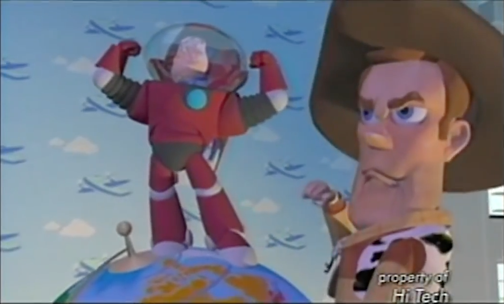
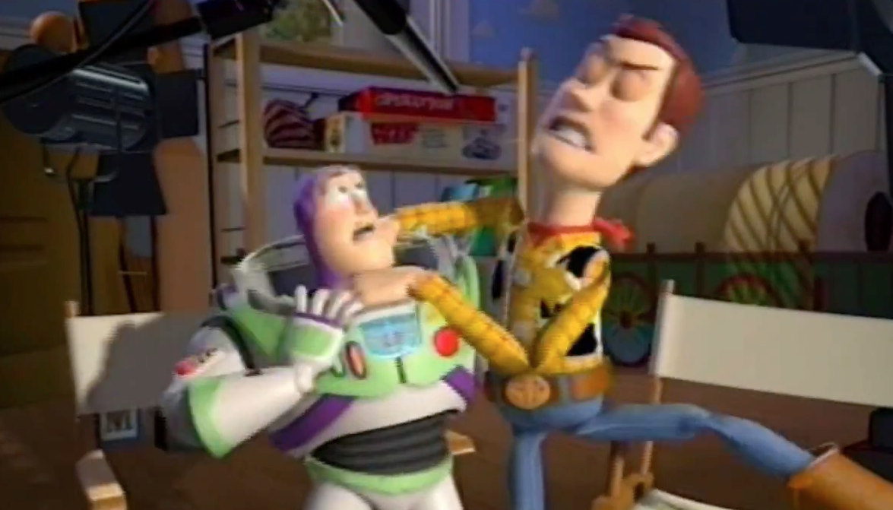
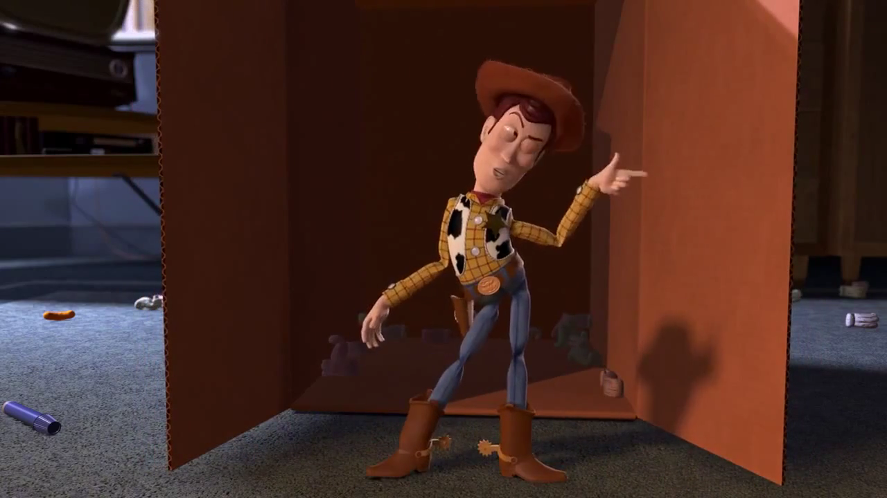
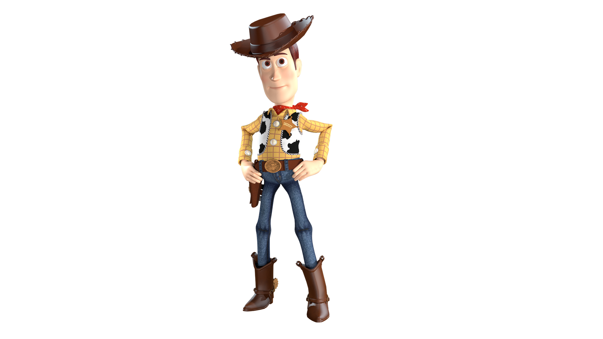
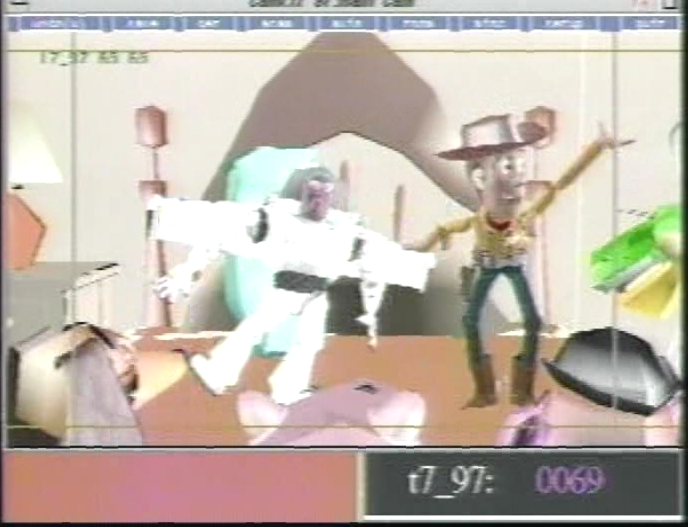
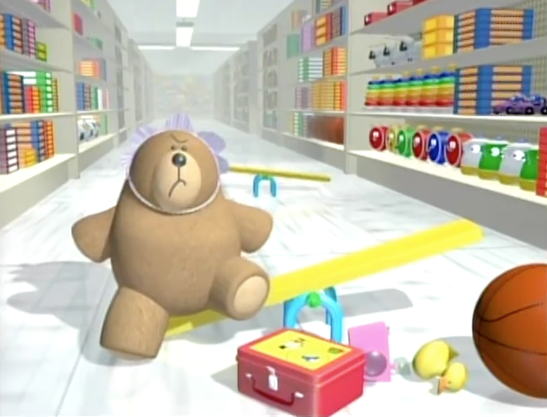
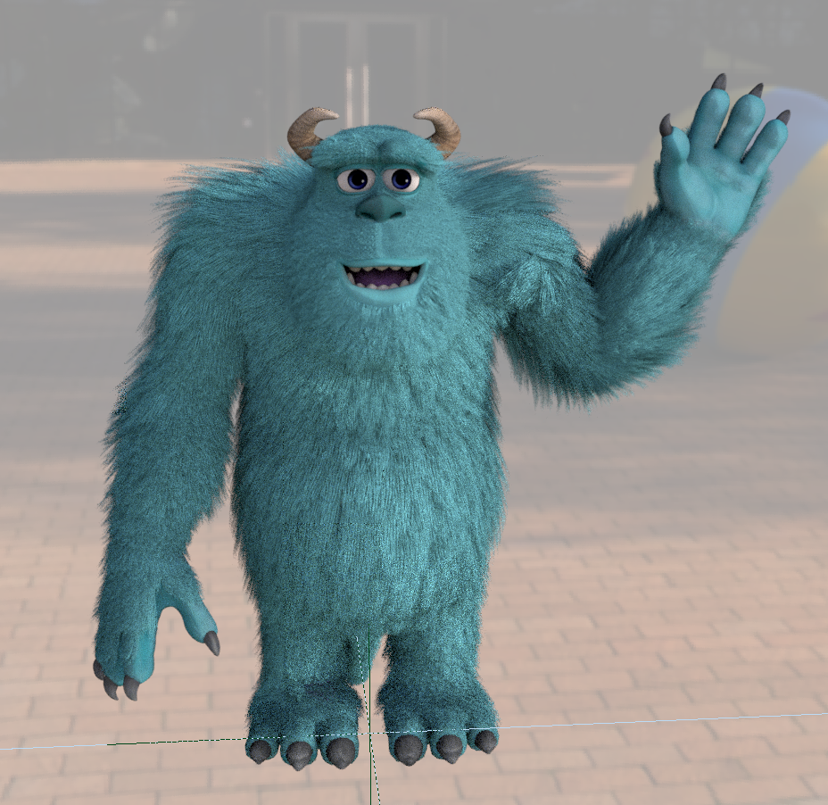

<!DOCTYPE html>
<html>

	<head>
		<title>Toyz in the Hood</title>
		<meta charset="UTF-8">
		<meta name="viewport" content="width=device-width, initial-scale=1">
		<meta name="theme-color" content="#006f6a">
		<link rel="stylesheet" href="https://www.w3schools.com/w3css/4/w3.css">
		<link rel="stylesheet" href="https://cdn.plyr.io/3.6.12/plyr.css" />
		<link rel="stylesheet" href="stylesheets/main.css">
		<script src="https://ajax.googleapis.com/ajax/libs/jquery/3.6.0/jquery.min.js"></script>
	</head>

	<body>
		<header class="w3-top"></header>
		<script>$("header").load("common/header.html")</script>
		<main>
			<!-- section id="heropage">
				<p id="titlecredits">Nobody would dare mention the word Copyright here or the FBI might get involved.</p>
			</section>
			<section id="sectionpage" class="w3-container w3-center w3-light-grey pagepad">
				<h2 id="pagetitle">Flupplejammy</h2>
<hr id="pagehr" />
				<p id="pagedate">February 3, 1986. November 22, 1995. May 26, 2021. July 9, 2105</p>
				
				<h2 id="pagebigtext" class="w3-left-align"><strong>Ed Catmull</strong></h2>
				<h4 class="w3-left-align"> I gotta say, you're either pretty smart or you had the owner of this place tell you how to do this. Either way, this is the page that is every page, so have fun! You might think this is just gibberish, but it's full of easter eggs and secrets and inside jokes. Don't tell anyone this exists or you might find a soowing card on your front door. Yenyway, this is what's lurking behind the pages of this seemingly very professional company. Have fun!!
<br> <br>
Have you ever asked yourself the question, am I an animated character from Pixar’s Toy Story? If you have, then you’ve come to the right place. The first part to answering this question is, do you feel real? Look down and touch your arm. Did you feel anything? If not, you either have extreme paralysis, or you are, in fact, an animated character! The second part to answering this question is, most of the time, is your face controlled by somebody else? Try to move your mouth. If you can’t move your mouth, then you, again, either have extreme paralysis, or you are, in fact, an animated character! Does your mouth move automatically? If so, you either have a severe brain condition that must be treated immediately, or you are, in fact, an animated character! Now, if you said no to most of these answers and yes to some, then you are, in fact, an animated character!
<br> <br>
Being an animated character from Pixar’s Toy Story has its perks. You are now a celebrity that has starred in multiple award-winning movies! Now you can do whatever you want, including eat tons of cheese for breakfast. You are also pretty high tech, for one, you can actually move your arm. Well, your arm can move, but you don’t really have control over that. Someone else moves you, remember? Sadly though, you are stuck and can’t actually do anything. Your house is a large hard drive, that’s packed with stuff. So, say hello to Sheriff Woodrow Pride for me. And those toys you got for Christmas–treat em’ nice.
<br> <br>
This bag is not a toy. Keep out of reach of children. Seatbelts save lives. To open, push, and turn clockwise. Serious injury or death can occur to people. Johnny was the nicest guy and he always had wise words of profanity. Sorry, howdy, my name is Woody, and this is Andy’s room. That’s all I wanted to say. Also there has been a bit of a mix up. Buzz Lightyear to star command. Come in star command. Why don’t they answer? Well, this is a classic moment in history that has often been misunderstood. This character has been looking out the window for over two years and hasn’t found a way to start chowing down on his favorite stuff yet. You see, Red, from Ed’s dream is not exactly who you think he is. He’s a spy. A spy named Ed Catmull. You know what? He’s actually exactly who you think he is. There are two words that will open a lot of doors for you. "Push" and "pull."
<br> <br>
Nobody knows what Rendew does, but they all know that we do it better than anyone else. P. S. Have you found my Flounder Tarts yet? Did you know that there’s a little bit of the planet mercury in every thermometer? Oh, and last item on the list, Andy’s birthday party has been moved to today. Okay. Please report to the principal’s office if you find anything that’s worthwhile. If not, just have a party!
<br> <br>
So, when we were first designing Toy Story, everything had to be meticulously placed. Nothing could be out of focus. All the cameras had to be rooted into the ground so they could grow into beautiful camera flowers. Water three times a day. After seven years, there was a rusty pile of metal on the ground. Wonder where that came from.
<br> <br>
If you find yourself in a situation where you have to make a choice between a sheriff and a spaceman, always choose the sheriff, because he’s obviously better. If you don’t think so then you’re a maniac. Inertia is a property of matter.
<br> <br>
Woody's empty holster isn't a mistake, it's a statement. A statement that Woody believes in non-violent resolution. A reminder to friend and foe of the kind of justice Woody practices. Pickles should not be eaten without parental consent and supervision. Please talk to your children about pickle eating at home.
<br> <br>
I’d like to say something to the youngest cowgirls out there: Be kind to critters. Carry yourself with grit and grace. Find your own trail and follow it with faith and courage (caargggeee). And always saddle your own horse.
<br> <br>
In a world without walls and fences, who needs Windows and Gates? Cher. Crazy grandpa car.
<br> <br>
You know, Andy loves toys that can fly! Don’t eat the car! Not the car! Oh, what am I yelling at you for, you’re a dog. You know… Andy loves toys that he can find. Great minds think different.
<br> <br>
What is a toy? A toy is a thing you can–you can project your imagination on, a stick is a toy, a rock is a toy, a hunk of dirt, a pair of socks, Woody a wooden puppet who looks like a cowboy, that’s a toy. Where your imagination takes precedence over anything the toy actually says does or pretends to be, well Buzz Lightyear is probably a 3-dimensional example of no imagination whatsoever, he does a couple of things (well) and absolutely nothing else.
<br> <br>
What’s the point in having investigators on your police force if all we have to investigate is stolen mailboxes? Come on. I got another paycheck coming, let me earn it we won’t let you down. We deserve a shot at it! So, say hello to Sheriff Woodrow Pride for me. And those toys you got for Christmas–treat em’ nice. Happy thanksgiving!
<br> <br>
Artifacts and slow renders can be extremely frustrating, especially with a deadline closing in. Without the right tools and techniques, debugging a scene can quickly take longer than one anticipates and steal away precious time one needs to get the actual work done.<br> <br> In this lesson, I'd like to talk about some basic techniques which can be used to get a better understanding of what's happening in your renders. This allows you to systematically track down problems and bottlenecks. Once resolved, your renders will finish faster and reach a higher visual quality. With this knowledge, you'll be able to anticipate issues while you're building the scene and eliminate them before they even become a problem. But remember, Buzz Lightyear is always a problem. Try to hit him as hard as you can before he gets chased with a squeaky guy named Binky. <br></h4>
				

<h4 class="w3-left-align">Well, hi there Tempus from Morph. You look mighty fine today. >:)</h4>

				<h2 id="pagebigtext" class="w3-left-align"><strong>What is Debugging and Optimizing?</strong></h2>
				<h4 class="w3-left-align">I'm not sure, but I'll let you know when I find out, ahilkhilk.<br></h4>

			<section id="videosection" class="w3-container w3-center w3-light-grey section">
				<div class="video">
					<video width="640" height="360" controls playsinline>
  						<source src="media/Dot.mp4" type="video/mp4">
  						<source src="media/WoodyTestAnimationFinal.mp4" type="video/mp4">
					</video>
				</div>
				<p>Frames: How should I know?. FPS: How dare. Working time: 80000 hrs. Made, edited and viewed without permission.</p>
			</section>

				<h2 id="pagesub1" class="w3-left-align"><strong>Typical Artifacts</strong></h2>
					<h4 class="w3-left-align">Typical artifacts are sometimes referred to as, Weeegles. They are normally made of wood or metal, generally with painted surfaces. Wooden Weeegles are most common, with various patterns and colors. Metal Weeegles, however, are often found painted with a bright metal color, such as gold, silver, and bronze, though occasionally you may find something more exotic. Weeegles vary greatly in size and shape, though they always tend to be large. While most have a foot-pitch or measure of two feet by two feet, there are some, like in the illustration below, which are much larger. Many have one large handle, but others may have two or more. Though they are most often made of wood, there are certainly Weeegles made of metal. The earliest evidence for the existence of Weeegles was found in the ancient ruins of the Egyptian city of Thebes and date back to over 5000 years in the future.
<br> <br>
Aee don no whaee you wehrent geeven a geeft, bot dats not an excus to GHAR THIS FAMILY!!!
</h4>
				<h2 id="pagesub1" class="w3-left-align"><strong>What to Expect</strong></h2>
					<h4 class="w3-left-align">A lot of people yelling and seemingly out of control. But contrary to popular belief, they are in fact, out of control. There is a lot of laughter, but that laughter is caused by the destruction of property. Virtual property. It's actually a hologram but that doesn't matter. What matters is that we're here for Andy when he needs us, that's what we're made for, right? Well, probably not. Did you know that there are over 50 speesheee's of Woody's? That's right. The sad thing is that 50 out of 10 of them die ("courupt") every year.
<br> <br>
Oh, no no, you're eatn' the car! Don't eat the car!! NOT THE CARRR!!!! Doh, what'm I yelln' at you for you're a dawwwgg. Woody, tell these guys I know what I'm doing. Guys, next time I'm stranded on an ailen planet, there's no one I'd rather have lead the rescue party than Buzz Lightyear... but of course, I'd like to see him as a crater.
<br> <br>
Slinky says, "Howdy, Woody! Andy coming home today?" Woody says, "Three more days, Slinky. Hey Slink, checkers at four o'clock?" Slinky looks up nervously saying, "Where? Where?" Woody laughs and says, "Hah, good one Slink." Slinky keeps looking around.
<br> <br>
Will parents ever teach their children that a toy is not something to be played with? Because you see, the saying "There's a snake in my boot!" is a pitchy reference to the cultural climate of Woody's 1950s America. The "boots" being postwar America threatened from within by the "snake" that was Kruschev's red menace. Don't you agree?
<br> <br>
You should never ask Rick Astley to give you his full collection of Pixar movies. He's never gonna give you Up.
<br> <br>
Guess what? I finally got around to reading that book by Stephen Hawking. It's about time.
</h4>

				<h2 id="pagebigtext" class="w3-left-align"><strong>The Original Script For Toy Story</strong></h2>

					<h4 class="w3-center-align">Have you ever wondered what Toy Story could've been? Well you've stumbled to the right place! Here's the original script for Toy Story, which was cut out of the film:
<br> <br>

                         ANDY <br>
                   (pulling Woody's string) <br>
            You saved the day again, Woody. <br> <br>

                         WOODY (VOICE BOX) <br>
            You're my favorite deputy.  I'd like <br>
            to come back with you to work. <br> <br>

Andy puts Woody's head on his shoulder.  He pulls the <br>
"ATTACK DOG" string and spins the doll on his shoulder. <br> <br>

Andy's other sister, LESLIE, crawls into the scene wearing <br>
a cowboy outfit.  She picks up a toy police dog and pulls <br>
out his tail. <br> <br>

                         ANDY (AS WOODY) <br>
            AAAAAAAAAH! <br> <br>

                         LESLIE (AS POLICE DOG) <br>
            Ssssssss-saaaac-tay-tay-tay-sax. <br> <br>

                         ANDY (AS WOODY) <br>
            Don't be doing that, you've got <br>
            something in your hands.  It's <br>
            _my_ toy police dog!! <br> <br>

Andy, holding a large toy police dog in each hand, <br>
grabs onto the toy's back.  He pulls it in front of <br>
Leslie.  She begins to pull his string. <br> <br>

                         LESLIE (AS POLICE DOG) <br>
            I'm going to give you something <br>
            you won't forget. <br> <br>

Leslie pulls on Woody's tail.  Andy lets go of his back <br>
and watches as Leslie grabs the tail and pulls.<br> <br>

                         LESLIE (AS POLICE DOG)<br>
            Whoaaa!!<br> <br>

                         ANDY (AS WOODY)<br>
            What's going on?<br> <br>

Woody's tail has been completely pulled out of his body!<br> <br>

                         LESLIE (AS POLICE DOG)<br>
            I'm a police dog.  Now, who's the <br>
            boss? <br> <br>

Andy gives Woody back to his mother. <br> <br>

                         ANDY (AS WOODY) <br>
            I guess you're the police dog. <br> <br>

                         WOODY'S MOTHER <br>
            That's right, son. <br> <br>

Woody is now an animated potato head.  Woody's mother, <br>
who is holding an apple, goes to the living room and <br>
turns on the television.  Then she stops at the door. <br> <br>

                              WOODY'S MOTHER <br>
            Woody.  Andy wants to see you in <br>
            the room. <br> <br>

                         WOODY (VOICE BOX) <br>
            What? <br> <br>

                         WOODY'S MOTHER <br>
            I know why you don't want to go in <br>
            to the room. <br> <br>

                                        WOODY (VOICE BOX) <br>
            Go in there. <br> <br>

Woody's mother gives Woody a nudge.  He pushes his head <br>
through the door. <br> <br>

                              WOODY <br>
            Don't do it.  Don't let them see <br>
            you're a toy! <br> <br>

                         WOODY'S MOTHER <br>
            You're just not ready to go to <br>
                school. <br> <br>

Woody begins to put his toys away.  He places the Potato <br>
Head next to the living room fireplace.  He then goes into <br>
the kitchen to prepare some food. <br> <br>

                              WOODY <br>
            Breakfast is almost ready. <br> <br>

                                          WOODY'S MOTHER <br>
            Where's Andy? <br> <br>

Woody goes into the living room and turns on the TV. <br> <br>


<br></h4>

				<h2 id="pagebigtext" class="w3-left-align"><strong>There's something in my shoe</strong></h2>

					<h4 class="w3-left-align">At first when I looked at my feet, I saw there was a village. Neat! I looked inside, to my dismay, there was a sleeping weirdo. Hey! But that's not the purpose of doing things on purpose. The purpose of that is to run as fast as you can, and see if you're an airplane. But if you tend to get a little groggy, there's a dentist always waiting to spray some water in your eye. Just you wait and see! Or not, considering the situation. Depends. On Tom Hanks. It's good to air out your sleeves every once in a while. Just because. Of gravity. Whahilkheuilkkk. Here's a picture of my Grandfather's nose: <br> <br></h4>

				

			<section id="videosection" class="w3-container w3-center w3-light-grey section">
				<div class="video">
					<video width="640" height="360" controls playsinline>
  						<source src="media/Dot.mp4" type="video/mp4">
  						<source src="media/WoodyTestAnimationFinal.mp4" type="video/mp4">
					</video>
				</div>
				<p>Frames: How should I know?. FPS: How dare. Working time: 80000 hrs. This is still being edited and viewed without permission and with a very hysterical laugh.</p>
			</section>

				<h2 id="pagebigtext" class="w3-left-align"><strong>How Hard Can it Be?</strong></h2>

					<h4 class="w3-left-align">Well, in reality, it's really quite hard to create the perfect balance of ketchup and mustard in your mouth. It takes a little swig of both, but with much practice, you can kind of keep your senses awake. It's just a little bit hard. What's also interesting is that when you keep yourself on the high edge of a place, like the edge of a building, you might actually get a little dizzy and the ketchup and mustard you squirted in your mouth might just come out a little. But just a little, so don't worry about that guy that you just put mustard on.
<br> <br>
Being cool is kind of weird. It's a cool concept, but it's not exactly enjoyable. When you want to do things it's pretty secure, but not in the way you'd expect. You can't be cool just by screaming, "I'M COOL!!" because according to that person I just yelled at, that's not what cool people do. But I and my monkey friends like to beleive that if we put our mind to it, we can do anything, including spell the word beleive right. Because apparently we can't. Shame on cranberry sauce. But me and my monkey friends like to think that we are cool, and when we think that, the most amazing thing happens: nothing! Which is not as dissapointing as you might think. It's definitely not more dissapointing than spelling the word dissapointing wrong. Evil waffles.... But I honestly like Emily better because, well, she lets me eat LIVER!!!
<br> <br>
Animating is pretty hard. Especially when you look like a total maniac weirdo, but it pays off… kind of. I mean, you do have those instances when you’re staring at your hand and people walk by your office and are like:
<br>
Them: Uhh, John? Are you okay?
<br>
Me: Oh, yeah, yeah, look at this, your ha–
<br>
Them: Do you need… help?
<br>
Me: What? No, just look at–
<br>
Them [cautiously and worriedly]: Ookay. [walks away]
<br>
Me: [shrug]
<br>
Or like when you’re recording reference and then people walk by and see you doing insane movements over and over and over again and they’re like:
<br>
Them: Uhh, John? Did you…?
<br>
Me: Did I what?
<br>
Them: Have you considered mental therapy?
<br>
Me: Uh, no, why?
<br>
Them: You’re… never mind, just… call me if you need to talk to a therapist.
<br>
Me: Uhhhhkkaaayyy?
<br>
Or the many times when you are standing out of your chair just to do a quick movement and sit down, and people are like:
<br>
Them [disgusted]: Ugh, come on. Take your meds, man.
<br>
But it always pays off. Sort of. Kind of. Not really. You get like 3 seconds of animation done, and you wasted a big portion of your life, but hey, at least you get payed the big bucks! Wait… never mind, you don’t. But that doesn’t matter, right? You’re doing what you love, right? Right?!?
<br> <br>
As my good pal, Dthavee once said, "This brain of mine... it's got a mind of it's own!"
<br> <br>
And then you get really, really angry at Buzz Lightyear because he stole all of your cough medicine to throw it out the window, thinking, "Evil Emperor Zurg did this!" Oh yeah, tough guy??
<br> <br>
				
<br>
</h4>

				<h2 id="pagebigtext" class="w3-left-align"><strong>A Question for Steve Jobs</strong></h2>

					<h4 class="w3-left-align">I went into the nonexistent alternate universe to ask the living Steve Jobs a question: Who's the coolest toy? When I opened the door to the nonexistent alternate universe, I asked a guy, "Where's Steve Jobs?" He said, "Steve's not here, man." Oh, well. I asked Steve Jobs the question anyway ("Who's the coolest toy?" remember?). Here's what he said:</h4>

			<section id="videosection" class="w3-container w3-center w3-light-grey section">
				<div class="video">
					<video width="640" height="360" controls playsinline>
  						<source src="media/GlueFinal.mp4" type="video/mp4">
  						<source src="media/WoodyTestAnimationFinal.mp4" type="video/mp4">
					</video>
				</div>
				<p>Frames: How should I know?. FPS: 200. Working time: 80000 hrs. I'm gonna get the guy that stole his black turtleneck.</p>
			</section>

				<h2 id="pagebigtext" class="w3-left-align"><strong>A conversation with grandPapi <s>Cher</s> <s>Jerry</s> Geri</strong></h2>

					<h4 class="w3-left-align">Me: Dehydrate.
<br> <br>
Geri: De-what now?
<br> <br>
Me: Dehydrate.
<br> <br>
Geri: De-who’s that?
<br> <br>
Me: Dehydrate.
<br> <br>
Geri: De-what’s you say?
<br> <br>
Me: Dehydrate.
<br> <br>
Geri: Dehoolagn?
<br> <br>
Me: Dehydrate.
<br> <br>
Geri: De-what’s that?
<br> <br>
Me: Dehydrate.
<br> <br>
Geri: Flupplejammy?
<br> <br>
Me: Dehydrate.
<br> <br>
Geri: Pheenlaggyhopo?
<br> <br>
Me: Dehydrate.
<br> <br>
Geri: Shlopshlap?
<br> <br>
Me: Dehydrate.
<br> <br>
Geri: Starmoondiggy?
<br> <br>
Me: Dehydrate.
<br> <br>
Geri: Chorb?
<br> <br>
Me: Dehydrate.
<br> <br>
Geri: Shamoo?
<br> <br>
Me: Dehydrate.
<br> <br>
Geri: Danny DeVito?
<br> <br>
Me: Dehydrate.
<br> <br>
Geri: Danny DeVito!
<br> <br>
Me: Dehydrate.
<br> <br>
Geri: Avocado!
<br> <br>
Me: Dehydrate.
<br> <br>
Geri: Gesundheit.
<br> <br>
Me: Dehydrate.
<br> <br>
Geri [gets really offended]: How dare! 
<br> <br>
Me: Dehydrate.
<br> <br>
Geri: You calln’ me a liar!?
<br> <br>
Me: Dehydrate.
<br> <br>
Geri: If the booTA fits.
<br> <br>
Me: Dehydrate.
<br> <br>
Geri: I’m goin’ to sleep.
<br> <br>
Me: Bop it to start.
<br> <br>
Geri: [slap, slap, slam]
<br> <br>
Me: [blink, blink]
<br> <br>
Geri: Who’s dehydrated now?!? Muahahahahaha muahahahahaha!!!
<br> <br>
Me: Still you?
<br> <br>
Geri: …
<br> <br>
Me: …
<br> <br>
Geri: Let’s go home and...       play. [chipmunk laugh].
<br> <br>

I don't suppose you'd want to be a
<a href="418.html" id="teapot" class="w3-left-align"><em>teapot.</em></a>
</h4>

				<h2 id="pagebigtext" class="w3-left-align"><strong>Grandy's Broom</strong></h2>

					<h4 class="w3-left-align">Ahehehehehe, is what my grandfather always said. His name was Geri. When he looked at the top of his shelf, he always had a little knickknack of a snowman. But back to Geri. He was out at the park one day, and he decided to have some fun. He got his skateboard (need I remind you that he's over 120 years old) and skated with his friends to the park. They were imaginary friends; he had gone senile early. Anyway, he decided to take a ride down the road to Point Richmond, to get to Oklahoma where he was born. Well, he wasn't exactly born there, he just ended up there when he got "kicked to the why." When he got there, he was rejected. And he just can't take that kind of rejection! So he gave up. The ghost. Of Christmas past. So, here's what happens if you think you're good at animation:<br> <br></h4>

				

				

				<h2 id="pagebigtext" class="w3-left-align"><strong>Ahm Hawunggreeeh</strong></h2>

					<h4 class="w3-left-align">Shoomp. You see, if you think that you're good at animation, things tend to break. Like your brain. You start seeing weird things like these buttons that say "save" and "delete" and you just instinctively click "delete" for some reason. So now that you've made it this far, have a free trip down nightmare lane: <br> <br></h4>

				

				

				

				

				

				<h2 id="pagebigtext" class="w3-left-align"><strong>If you're smart enough</strong></h2>

					<h4 class="w3-left-align">In order to access services through our site, you must provide us with certain personal information such as your name, your credit card number and expiration date, your credit card billing address, your telephone number, your e-mail address and the name or names of the person(s) in your immediate family. We may also ask you for other personal information, such as your medical history.
<br> <br>
All acquired customer information becomes property of the Rendew Corporation and can be used (but is not limited to) any venture the Rendew Corporation deems it beneficial to it. By visiting Rendew (or a Rendew partner) the user agrees to relinquish (if requested) any personal assets that may be deemed "usable" by the Rendew Corporation; this includes (but is not limited to) real estate, stock holdings, user transportation, employment income and the users "soul" (either real or imagined, regardless of spiritual or religious affiliation).
<br> <br>
By visiting the Rendew website you become a registered member of the Rendew Database. You may not unsubscribe to this database at any time.
<br> <br>
Rendew will share your personal information with third parties whenever it deems such sharing to be advantageous to it, including when you engage in certain activities on our site such as using a menu, viewing, clicking your mouse or breathing. Rendew will also share your personal information when you respond to promotional materials from Rendew and authorize a third party to use your personal information for purposes such as, for example, sending you additional promotional materials that further obligate you (and your family) to receive additional promotional materials, providing you a product or service, or entering you in a contest, sweepstakes or game that will usually require a financial obligation on the part of the user.
<br> <br>
By visiting Rendew you are contractually obligated to read all email that is sent to you via the Rendew servers. Failure to do so will be considered of a breach of contract.
<br> <br>
We automatically log all information about your computer's connection to the Internet, which we call "Rendew Property". Rendew Property consists of things such as IP address, operating system and type of browser software being used and the activities conducted by the user while on our site (or other sites). We may also use some of the Rendew Property, such as the pages you visited on our site (or other sites), to send you e-mail messages (such as “Rendew requires you to join our Rendew Corporate Street Team. Failure to do so will result in legal action") focused on products that we feel you should (or must) be interested in and now are contractually obligated to be interested in.
<br> <br>
From time to time we may add or enhance services available on the site to increase our market share. We will use the information you provide to increase our market share and facilitate any program that is deemed beneficial to the Rendew Corporation. For example, if you email us with a question, we will use your email address, name, nature of the question, etc. to assist the Rendew Corporation in acquiring new assets. This includes using your question and likeness in publicity materials as the submission of any data to the Rendew Corporation immediately transfers your status as a "user" to “Promotional Entity". This status is life long and binding. Please see the Promotional Entity contract at Reh-uhn-dooh!@!#$$#^$%^&.com for more information on your obligations.
<br> <br>
Okay now son, don't get too scared already. None of that was true. Except for the fact that there's a monster under your bed. That part is totally true. Oh, and that you can eat all the ice cream you want. Thank your parents for me. Or don't.
<br> <br>
If your name appears above, please report to the Principal's office after school. Wai'tll I tell the fellah's 'bout this!
<br> <br>
Merry Christmas!
</h4>
				

			<section id="videosection" class="w3-container w3-center w3-light-grey section">
				<div class="video">
					<video width="640" height="360" controls playsinline>
  						<source src="media/Dot.mp4" type="video/mp4">
  						<source src="media/WoodyTestAnimationFinal.mp4" type="video/mp4">
					</video>
				</div>
				<p>Frames: How should I know?. FPS: How dare. Working time: 80000 hrs. What's the matter? It's a nice shirt!</p>
			</section>

			<section id="videosection" class="w3-container w3-center w3-light-grey section">
				<div class="video">
					<video width="640" height="360" controls playsinline>
  						<source src="media/Dot.mp4" type="video/mp4">
  						<source src="media/WoodyTestAnimationFinal.mp4" type="video/mp4">
					</video>
				</div>
				<p>Frames: How should I know?. FPS: How dare. Working time: 80000 hrs. What, you don't get it? Steve Jobs? What? Hello? A spaceport!</p>
			</section>

			<section id="videosection" class="w3-container w3-center w3-light-grey section">
				<div class="video">
					<video width="640" height="360" controls playsinline>
  						<source src="media/Dot.mp4" type="video/mp4">
  						<source src="media/WoodyTestAnimationFinal.mp4" type="video/mp4">
					</video>
				</div>
				<p>Frames: How should I know?. FPS: How dare. Working time: 80000 hrs. If you happen to type the words "famous park" into a search engine, I think the word you're searching for is [space] ranger.</p>
			</section>

			</section -->
		</main>
		<footer class="w3-center"></footer>
		<script>$("footer").load("common/footer.html")</script>
		<script src="https://unpkg.com/toml-patch"></script>
		<script src="https://cdn.plyr.io/3.6.12/plyr.polyfilled.js"></script>
		<script>
			var name = location.hash.slice(1);
			if (name) {
				$.get(name + ".toml", function (data) {
					var page = TOML.parse(data);
					document.title = page.title;

					var hero = document.createElement("section");
					hero.id = "heropage";
					hero.setAttribute("style", 'background: #FFF url("' + page.background + '") center/cover no-repeat');
					$("main").html(hero);

					var section = document.createElement("section");
					section.id = "sectionpage";
					section.classList = "w3-container w3-center w3-light-grey pagepad";
					var pagetitle = document.createElement("h2");
					pagetitle.innerHTML = page.title;
					pagetitle.id = "pagetitle";
					section.appendChild(pagetitle);
					$("main")[0].appendChild(section);

					function build(el, parent) {
						if (el.video) {
							var node = document.createElement("section");
							node.id = "videosection";
							node.classList = "w3-container w3-center w3-light-grey section";
							var wrapperNode = document.createElement("div");
							wrapperNode.classList = "video";
							var videoNode = document.createElement("video");
							videoNode.controls = true;
							videoNode.setAttribute("playsinline", "");
							videoNode.width = "720";
							videoNode.height = "378";
							if (el.loop) {
								videoNode.setAttribute("loop", "")
							}
							$(el.video).each(function (i) {
								var sourceNode = document.createElement("source");
								sourceNode.src = el.video[i];
								sourceNode.type = "video/mp4";

								videoNode.appendChild(sourceNode);
							});
							wrapperNode.appendChild(videoNode);
							node.appendChild(wrapperNode);
							if (el.caption) {
								var captionNode = document.createElement("p");
								captionNode.id = "imagenotes"
								captionNode.innerHTML = el.caption;
								node.appendChild(captionNode);
							}
						} else if (el.tag == undefined) {
							var node = document.createElement("p");
						} else {
							var node = document.createElement(el.tag);
						}
						if (el.tag == "h2") {
							node.id = "pagebigtext";
							node.classList = "w3-left-align";

						} else if (el.tag == "img") {
							node.id = "pageimage";
							if (el.caption) {
								var captionNode = document.createElement("p");
								captionNode.id = "imagenotes"
								captionNode.innerHTML = el.caption;
								parent.appendChild(captionNode);
							}
						}
						if (el.content) {
							node.innerHTML = el.content;
							node.classList = "w3-left-align";
						}
						if (el.id) {
							node.id = el.id;
						}
						if (el.class) {
							node.classList.add(...el.class);
						}
						if (el.src) {
							node.src = el.src;
						}
						if (el.credits) {
							node.innerHTML = el.credits;
							node.id = "titlecredits";
						} else if (el.date) {
							node.innerHTML = el.date;
							node.id = "pagedate";
						}

						parent.appendChild(node);
						if (el.tag == "img" && el.caption) {
							parent.appendChild(captionNode);
						}
					}
					$(page.head.element).each(function (i) {
						build(page.head.element[i], $("#heropage")[0]);
					});
					$(page.body.element).each(function (i) {
						build(page.body.element[i], $("#sectionpage")[0]);
					});
					const players = Plyr.setup('video', { controls: ['play-large', 'play', 'mute', 'volume', 'current-time', 'progress', 'duration', 'pip', 'fullscreen'] });
				});
			}
		</script>

	</body>

</html>
